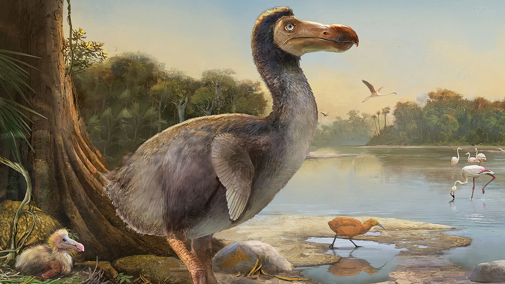

El dodo (Raphus cucullatus) fue un ave no voladora que habitó la isla de Mauricio en el océano Índico. Se extinguió en el siglo XVII debido a la caza excesiva y la introducción de especies invasoras por parte de los humanos. El dodo es un símbolo de extinción y ha sido objeto de numerosas investigaciones científicas.
El dodo era un ave grande, con un cuerpo robusto y plumaje grisáceo. Tenía un pico curvado y patas fuertes, lo que le permitía caminar por el terreno accidentado de la isla. Aunque no podía volar, el dodo era un excelente nadador.
El dodo habitaba principalmente en los bosques de la isla de Mauricio, donde se alimentaba de frutas, semillas y raíces. Su hábitat natural incluía áreas costeras y zonas de vegetación densa.
El dodo era un ave herbívora que se alimentaba principalmente de frutas, semillas y raíces. Su dieta variaba según la disponibilidad de alimentos en su hábitat. Se cree que el dodo tenía un papel importante en la dispersión de semillas en la isla.
La extinción del dodo se debió a la caza excesiva por parte de los colonizadores europeos y la introducción de especies invasoras, como ratas y cerdos, que competían por los mismos recursos alimenticios. El último avistamiento confirmado del dodo fue en 1662, y se considera extinto desde entonces.